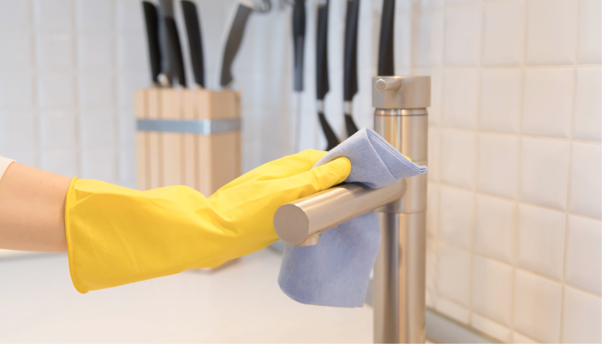

Лайфхаки
Уборка пыли
Экологичная уборка играет значительную роль в осознанном потреблении. Использование экологически чистых и биоразлагаемых средств для уборки помещений снижает негативное влияние на окружающую среду. Это также способствует улучшению качества воздуха внутри помещений и здоровью людей, исключая воздействие вредных химических веществ. Правильное использование ресурсов, энергии и воды во время уборки также способствует сокращению экологического следа и помогает сохранить наши природные ресурсы.
Экологичная уборка может уменьшить загрязнение окружающей среды, а также улучшить качество воздуха в помещении.
Уборка пыли является частью ухода за домом, но как ее сделать, не навредив окружающей среде и здоровью? В этой статье мы использовали несколько простых, но эффективных лайфхаков, которые помогут вам научиться убираться экологичнымии способами.
 Используйте микрофибру для уборки пыли
Используйте микрофибру для уборки пылиМикрофибра — это экологически чистый материал, который эффективно убирает пыль и грязь. Он не требует использования химических стредств. При этом микрофибра легко стирается в машине и может использоваться многократно.
 Избегайте использования аэрозольных спреев и других ядовитых средств
Избегайте использования аэрозольных спреев и других ядовитых средствАэрозольные спреи и другие химические средства представляют собой большую опасность для окружающей среды и здоровья людей. Используйте натуральные средства, такие как уксус и лимонный сок, чтобы убраться в доме. Они не только экологичнее, но и дешевле.
 Проветривайте помещение
Проветривайте помещениеЧастое проветривание помещения поможет удалить из него пыль и другие вредные вещества. Откройте окно и дверь, чтобы обеспечить циркуляцию воздуха. Также это поможет снизить уровень влажности, который может привести к появлению плесени.